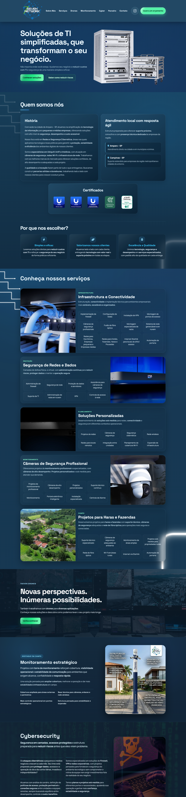

7Seven Network
Desenvolvimento sob medida
Apresenta suas soluções de segurança e infraestrutura de redes. A estrutura e o design foram pensados para a marca, organizando o conteúdo com clareza e dando destaque a cada área de atuação.
Design moderno, clean e tecnológico
Criei uma interface com visual clean e linguagem tecnológica, alinhada ao universo da empresa. A composição equilibra espaços, hierarquia de informações e elementos visuais para valorizar as soluções e tornar a navegação intuitiva. Animações dinâmicas e respostas visuais ao passar o mouse acrescentam personalidade à interface, reforçando a linguagem tecnológica com detalhes que convidam à interação.
Tecnologia com atenção à acessibilidade
Priorizo a acessibilidade na experiência de navegação, considerando também quem explora o site pelo teclado. A navegação com a tecla Tab entre links, botões e outros elementos interativos faz parte desse cuidado, facilitando o caminho até as informações sobre as soluções de segurança e infraestrutura de redes.
Soluções em movimento
Utilizei vídeos nos cards para apresentar as soluções de forma mais visual e dinâmica. Na seção de drones, esse recurso também ganha destaque, mostrando a tecnologia em ação e aproximando o visitante das suas aplicações.
Vídeos com atenção à leveza
A integração dos vídeos foi pensada para equilibrar impacto visual e desempenho, com cuidado no carregamento para não sobrecarregar o site. Assim, o movimento faz parte da experiência e valoriza o conteúdo, mantendo o foco em uma navegação leve e fluida.
